Liven up your rig¶
Prerequisite¶
To follow this tutorial, you will need to understand:
What is Blueprint visual scripting and how to use it.
How does the Animation instance work (See the Unreal official youtube video)
You will also need:
A functional Unreal project containing at least one character with a valid Skeletal Mesh (See How to set-up a proper project)
A compatible Performer RT project loaded in Dynamixyz Grabber. Ensure the Animation streaming is enabled in the Grabber and note down the IP address and animation port.
Note
Convention in Unreal:
Blendshapes are named Morph Target or Curves.
Joints/Bones are named Bones.
Basic concept¶
In an Animation Blueprint, it is possible to animate a specific mesh by doing operations on its morph targets and bones. Unreal Live Link system can now be used to transparently animate these attributes consuming animation data from a Source for a Subject.
Here is the Dynamixyz Live Link Plugin protocol:
The Dynamixyz Source connects to the Grabber animation server.
The Grabber sends information about the rig so that the Source can create a Live Link Subject.
Each time a frame is computed by the Grabber retargeting process, the animation server sends the coefficients of all the rig entities through the network. The Source receives the data, extracts the needed information (entities coefficients, timecode) and passes it on to the Live Link protocol for the targeted Subject.
The Animation Blueprint associated with this Subject re-builds the character’s pose for this frame.
A Subject can be used to animate multiple characters and several sources can be used at the same time.
Connecting a Dynamixyz Source¶
Run Grabber, load your RT profile and select an input (camera or video file). Click on Start tracking.
In the Editor, go to the Window menu and select LiveLink to open the Live Link client window.
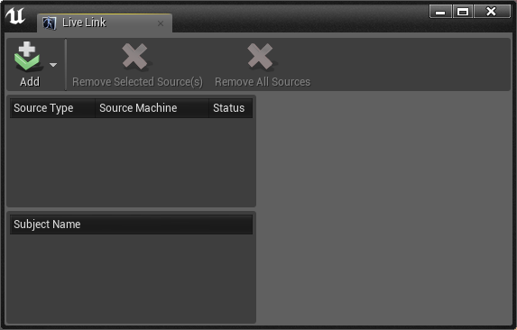
Click on the Add button and hover over Dynamixyz Source. Enter the Grabber’s IP address and the Animation server port, then click on OK.
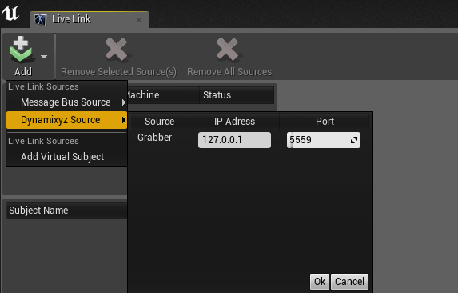
The new source appears in the Sources panel. The status indicates if the source has successfully established a connection. The Subject Name panel indicates the name of the Subject associated with the source. This name is important as you will need to pass it to Live Link in the next step. You can give your subject a special name by checking the Override Subject Name in the Details panel of the selected source (on the right).
Note
If the RT project was exported with Performer 2.7.0.2 or above, the default subject name will be the name of the retargeting profile written in the ESC file.
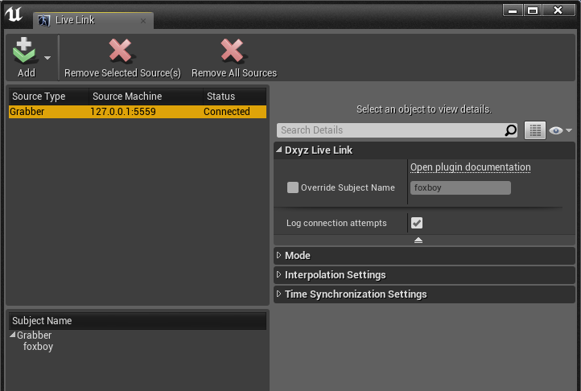
Tip
A “Connecting…” status means the source is trying to connect to the Grabber. If it takes more time than it should, you can check the connection logs by opening Window->Developper Tools->Output Log. In the meantime, check in the Network services configuration of the Grabber if the Animation streaming is enabled and if the port is the right one.
A “Disconnected” status means the source found the Grabber but is no longer connected to it (the Grabber stopped streaming or was closed).
Since DxyzLiveLinkPlugin v1.1.0, it is possible to prevent the plugin to log the multiple connection attempts in order to lighten the Output logs. To do this, uncheck Log connection attempts in the advanced Dxyz Live Link settings for the selected source.
If the source status is “Connected”, you can go on to the next step.
Creating an Animation Blueprint¶
Open the Content Browser
Create a new animation by clicking on Add New, and click on Animation -> AnimationBlueprint in the context menu. The Create Animation Blueprint dialog should appear.
Choose the Parent Class (basic one is AnimInstance), and select your character skeleton under the Target Skeleton section.
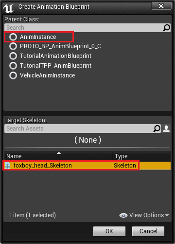Open the Animation Blueprint. In the Animation Graph (accessible from the Graphs panel), add a new Live Link Pose node and connect it to the Final Animation Pose node. Enter the name of the Subject associated with your Source.
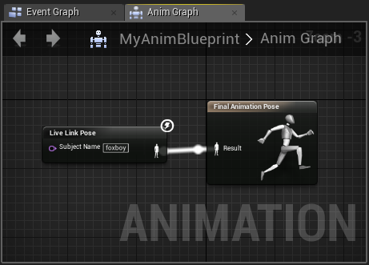
You should now see your character coming to life in the animation preview.
Creating a Dynamixyz Live Link Retarget Asset¶
If you are not satisfied with the final pose of your character, you can create a Dynamixyz Live Link Retaget Asset to rearrange it.
Setting up a Retarget Asset¶
The Dynamixyz Live Link Retarget Asset looks like the image below :
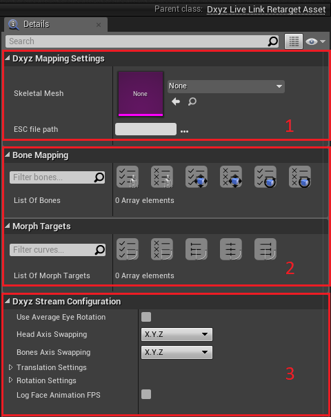
The Dxyz Mapping Settings category (1) looks for a matching between a Skeletal Mesh and an ESC file.
The Bone Mapping and the Morph Targets categories (2) are where operations can be made on bones and morph targets.
The Dxyz Stream Configuration category (3) allows axis to be swapped and/or inverted.
Follow the next steps to set up a proper Retargeting Asset :
Open the Content Browser
Create a new blueprint by clicking on Add New, and click on Blueprint Class. The “Pick Parent Class” dialog should appear.
Search for DxyzLiveLinkRetargetAsset and click on the Select button.
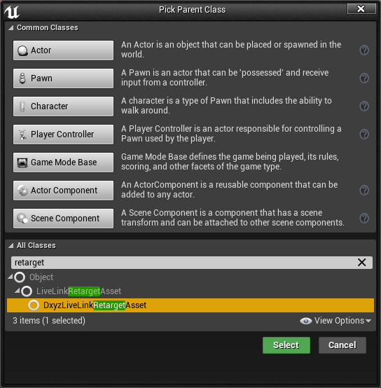
Open the Retargeting Blueprint.
Select the Skeletal Mesh associated with your Animation Blueprint.
Import the ESC used in your Grabber project. Once the two fields are filled, informations about bones and morph targets appear in the second category.
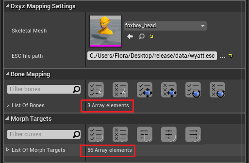
The plugin tries to find matching bones between the ESC and the Skeletal Mesh. If you want to manually remap the bones, you can do it by chosing another bone in the dropdown list. You can also map one bone to several bones in your character using the “+” button. A warning can appear if the automatic matching failed for one or many bones, the concerned bones will be ignored during animation. You will have to manually select the matching bone in the dropdown list.
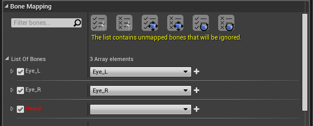
The plugin tries to find matching blendshapes between the ESC and the Skeletal Mesh. If you want to manually remap the blendshapes, you can do it by chosing another shape in the dropdown list. You can also map one shape to several shapes in your character using the “+” button. A warning can appear if the automatic matching failed for one or many blendhsapes, the concerned blendhsapes will be ignored during animation. You will have to manually select the matching blendhsape in the dropdown list.
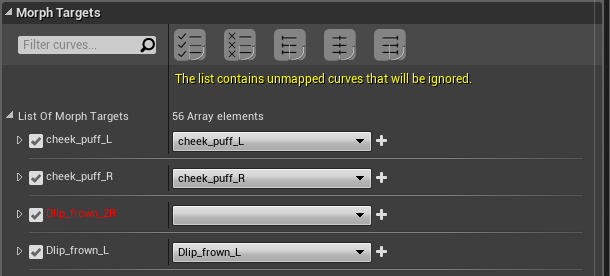
This warning can also appear if the ESC contains non-unique blendshape names. Once again, when creating your rig in Maya it can be crucial to give your blendshapes unique names. Unreal will combine every group of blendshapes and if some of the shapes have the same name they will be merged. If this happens, you can either :
Clean the rig in Maya (rename the conflicted shapes)
Update the retargeting links in Performer
Export again the RT profile and load it in Grabber
Import the new rig in Unreal
Update the Animation Blueprint and the Retarget Asset
Or :
In the Retarget Asset, identify which conflicted shape should be used to animate the merged shape on the mesh and disable the others. If you did not give those blendshapes the same name on purpose, we highly recommand you to do the first solution.
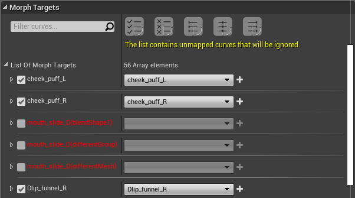
By default, all the bones and blendshapes present in the ESC will be animated.
Note
A Dynamixyz Live Link Retarget Asset refers to a particular Skeletal Mesh and a particular ESC. Using the same Retarget Asset on different Skeletal Meshes will fail.
You can now adjust the final pose of your character.
Customizing bones¶
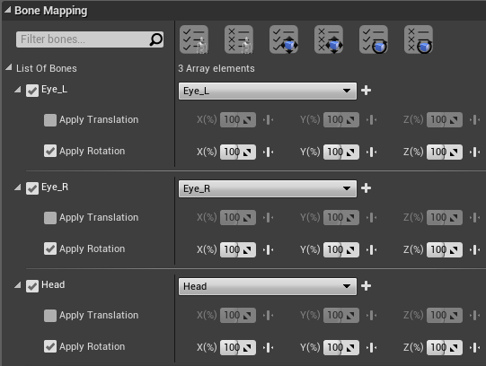
The Bone Mapping category lists the bones as they appear in the ESC. For each bone name, you can select a corresponding bone in the Skeletal Mesh using the dropdown list.
You can activate or deactivate one or many specific bones by checking the checkbox left to the bone name.
You can activate/deactivate only the translation or the rotation for each bone.
You can increase/decrease the translation and rotation values on X, Y and Z.
You can clamp the translation and rotation values on X, Y and Z.
The shortcut buttons allow you to enable/disable all bones, enable/disable all translations, enable/disable all rotations.
You can use the search bar on the left to only display a few bones, in this case the shortcuts will apply to the present bones only.
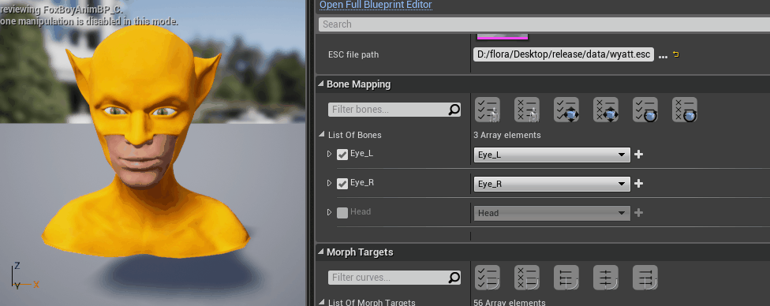
It is possible to map several skeleton bones to the same bone. Click on the “+” button to add a line. You can now apply the source translation and/or rotation to each mapped bone, or share this value between them.
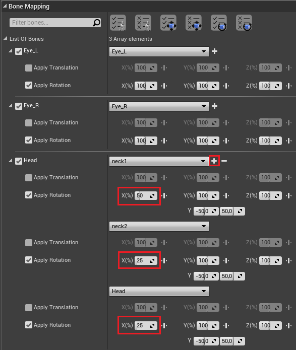
Customizing morph targets¶
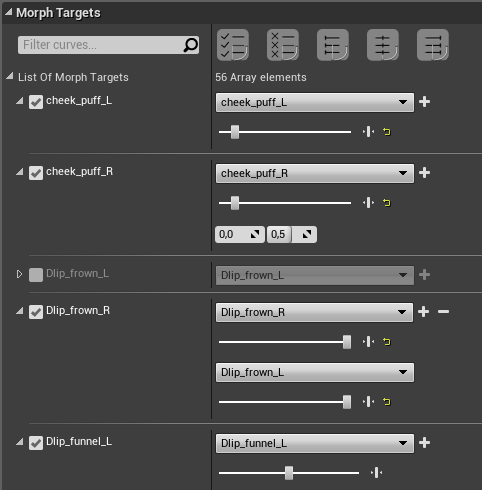
The Morph Targets category lists the morph targets as they appear in the ESC. For each morph target, you can select a corresponding morph target in the Skeletal Mesh using the dropdown list.
You can boost or ease its weight by using the slider.
You can activate or deactivate one or many specific morph targets by checking the checkbox left to the morph target name.
You can clamp the blendshape value.
The shortcut buttons allow you to enable/disable all morph targets, ease/reset/boost all morph targets.
You can use the search bar on the left to only display a few morph targets, in this case the shortcuts will apply to the present morph targets only.
It is possible to map several skeleton morph targets to the same ESC morph target. Click on the “+” button to add a line. You can also boost or ease the value for the new shape.

Customizing stream¶
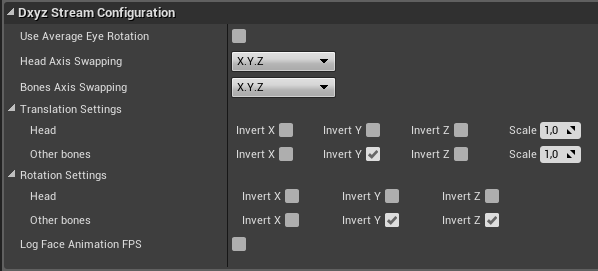
The coefficients streamed by the Grabber are in X,Y,Z coordinates. There is a distinction between the head and the other bones : the head uses world space coordinates and the other bones use parent bone space coordinates. Both can be modified using the Dxyz Stream Configuration.
The first field Use Average Eye Rotation reduces the eyes animation noise by applying the same average value for each of them.
It is possible to swap rotation and translation axis if there is an inversion in the rig
It is possible to invert a specific axis direction for translation and/or for rotation.
The positions can be multiplied by a scalar using the Head Position Scale and the Position Scale values.
It is possible to log the Animation FPS (computed when the pose is updated).
Linking Retarget Asset to Animation Blueprint¶
Go to your Animation Blueprint and select the Live Link Pose Node. In the Details panel, select the corresponding Retarget Asset. Compile, and the animation should update.
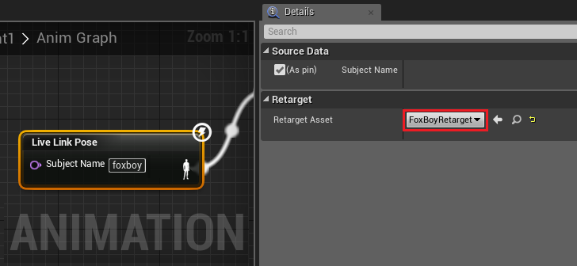
Note
Once the Retarget Asset is linked, you can still modify it and see the differences on your Animation Preview in realtime.
Modifying Dynamixyz Live Link Plugin configuration in a shipped project¶
Modifying the sources¶
When you add/remove Dynamixyz Sources in the editor, the plugin automatically saves your new configuration to a file called “Sources.dxyz” located in your Content folder, under the DxyzSaved folder. Once you shipped your project, this file will be copied in your output folder (under the same path <ProjectName>/Content/DxyzSaved). Modifying this file will allow you to update your configuration without having to ship again your project. You can for instance change the IP adress of the connected Grabber, remove or add a source, etc.
You will have to restart your exe for the modifications to be effective.
Modifying a Retarget Asset¶
When you create a new Dxyz Live Link Retarget Asset, the plugin automatically creates a DXYZ file with the same name, located in your Content folder, under the DxyzSaved folder. The file will be updated each time you save your Retarget Asset. Once you shipped your project, this file will be copied in your output folder (under the same path <ProjectName>/Content/DxyzSaved). Modifying this file will allow you to update your mapping without having to ship again your project. You can for instance disable a bone, change some rotation value, swap axis, etc.
You will have to restart your exe for the modifications to be effective.
Warning
Please note that the “settings” part of this file is indicative only. If you want to change the input settings (either the Dynamixyz ESC or the targeted mesh), you will have to update and compile the Dxyz Live Link Retarget Asset in the Editor.
Animate several characters in realtime with Dynamixyz Live Link Plugin¶
With Dynamixyz Live Link Plugin, it is possible to bring several characters to life at the same time.
If the RT profile loaded in Grabber contains several ESC :
In Grabber, ensure all the ESC you want to use are checked in the bottom dropdown list.
Create one Dynamixyz Live Link Source for each ESC. The provided IP adress will be the one of the computer on which Grabber is started, and the port follows this simple rule : the port P1 associated with the first ESC will be the Animation server port defined in the Grabber Network options (by default 5559). The port P2 associated with the second ESC will be P2 = P1+1 (by default 5560), the third port P3 will be P3 = P2+1 (by default 5561), etc… Each new Source will be associated to one particular Subject.
Create one Animation Blueprint for each character and fill the name of the right Subject in the Live Link Pose Node.
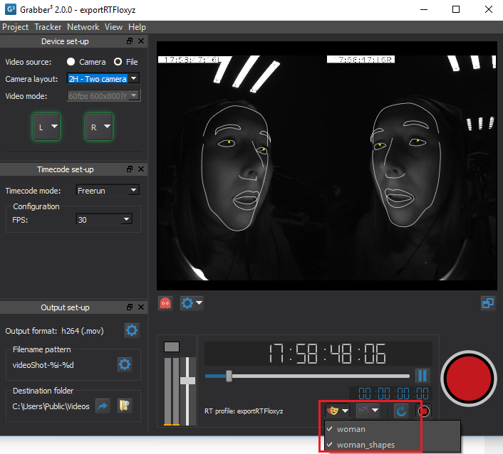
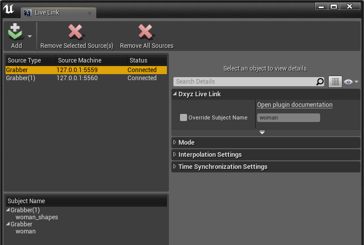
If the ESC are streamed from different computers (different Grabbers) :
Create one Dynamixyz Live Link Source for each ESC, providing the IP adress of the Grabber and the Animation server port defined in the Grabber Network options. Each new Source will be associated to one particular Subject.
Create one Animation Blueprint for each character and fill the name of the right Subject in the Live Link Pose Node.
Character Blueprint association (optional)¶
To associate a Character Blueprint with an Animation Blueprint, follow these steps :
Create a Character Blueprint.
Go to the Viewport tab.
Note
If you do not see the Viewport tab, and you only have a list of properties, a message on the top will invite you to open the Full Blueprint Editor.

Select the Mesh component in the Components panel.

On the Detail panel, under “Animation”, choose the following :
Animation Mode -> Select “Use animation Blueprint”.
Anim Class -> Select the name of your Animation Blueprint class (the AnimationBlueprint with a _C suffix)
Skeletal Mesh -> Select the animated mesh.
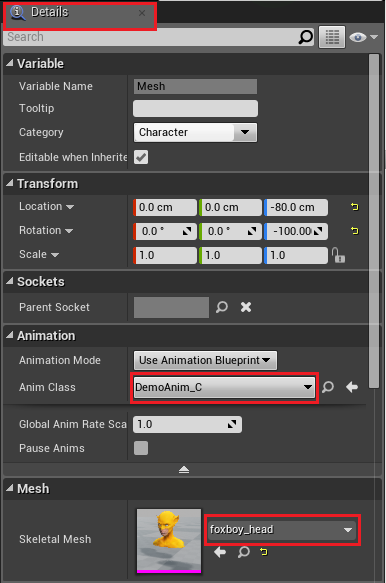
Caution
Never select an Animation instance with the _Class suffix. Your character will never be able to move otherwise.
If you delete and recreate your animation, don’t forget to re-associate your animation instance with your character.